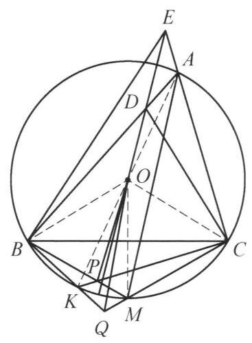

12 例 3：共轭相似与反交平行线角度转换
12.1 题目
锐角 \triangle {ABC} 中， {AB} > {AC} ， M 为其外接圆 O 上劣弧 {BC} 的中点， K 为 A 的对径点. 过 O 作 {AM} 的平行线交 {AB} 于 D ，交 {CA} 的延长线于 E . 直线 {BM} 交直线 {CK} 于 P ，直线 {CM} 交直线 {BK} 于 Q . 证明: \angle {OPB} + \angle {OEB} = \angle {OQC} + \; \angle {ODC} .

图 2-2
12.2 参考解答
如图 2-2，连接 {AK},{BO},{CO},{OM}. 由 {OD}//{AM} ，知 \angle {BDO} = \angle {BAM} = \angle {BCM} = \angle {CBP} . 注意到 \angle {DBO} = {90}^{ \circ } - \angle {ACB} = \angle {BCP} ,故 \triangle {BOD} \backsim \; \triangle {CPB} ,于是有 \frac{BD}{CB} = \frac{BO}{CP} = \frac{CO}{CP} ,故 \frac{BD}{CO} = \frac{BC}{CP} ,而 \angle {DBC} = \angle {AKC} = \angle {OCP} ,所以 \triangle {DBC} \backsim \triangle {OCP} . 同理,有 \triangle {ECB} \backsim \triangle {OBQ} .
所以
\angle {OPB} - \angle {OQC} = \angle {OMB} + \angle {POM} - \angle {OMC} + \angle {QOM}
= \angle {POM} + \angle {QOM}
= \angle {POM} + \angle {COM} - \angle {BOM} + \angle {QOM}
= \angle {COP} - \angle {BOQ}
= \angle {BDC} - \angle {CEB}
= \angle {BAC} + \angle {ACD} - \angle {CAB} + \angle {ABE}
= \angle {ACD} + \angle {ABE}
= \angle {ACD} + \angle {AED} - \angle {ADE} + \angle {ABE}
= \angle {ODC} - \angle {OEB}\text{ . }
即 \angle {OPB} + \angle {OEB} = \angle {OQC} + \angle {ODC} .
注:通过比例关系导出 \triangle {DBC} \backsim \triangle {OCP} 及 \triangle {ECB} \backsim \triangle {OBQ} 是本题的关键.
12.3 解题思路与分析
这份证明之所以让人觉得“费解”甚至“像变魔术”，主要有以下两个原因： 1. 前半部分的跳跃：拿到题目后，为什么要去证 \triangle DBC \sim \triangle OCP？通过半径 BO = CO 把 \triangle BOD \sim \triangle CPB 的比例进行“重组”是怎么想到的？ 2. 后半部分“无中生有”的代数变形：在角度计算中，解答凭空加减了许多值为 0 的项（如 \angle OMB - \angle OMC、\angle COM - \angle BOM、\angle AED - \angle ADE），让人看不出背后的几何动机。
实际上，如果剥开解答为了“写成紧凑的一行连等式”而特意包装的外壳，还原出探索这道题的真实逆向思维过程，你会发现每一步都有极其自然的几何动因。
12.3.1 一、 破题立意：利用“对称共轭性”重组结论
审题时首先观察图形的对称结构（即 B 与 C 互换时的对应关系）： * M 是弧 BC 中点，K 是 A 的对径点，这两点关于 B, C 是对称的。 * 当 B \leftrightarrow C 互换时，点 D(AB \cap OE) 与点 E(AC \cap OD) 互换，点 P(BM \cap CK) 与点 Q(CM \cap BK) 互换。
待证结论为 \angle OPB + \angle OEB = \angle OQC + \angle ODC。面对这种高度对称的几何恒等式，最自然的想法是将地位对等的角放在一起比较： \angle OPB - \angle OQC = \angle ODC - \angle OEB 移项后，等式左边 \angle OPB - \angle OQC 完全属于圆下方的 \{P, Q\} 系统，等式右边 \angle ODC - \angle OEB 完全属于三角形上方的 \{D, E\} 系统。整道题的核心任务，就变成了寻找连接“上方 \{D, E\}”与“下方 \{P, Q\}”的桥梁。
12.3.2 二、 核心桥梁：\triangle DBC \sim \triangle OCP 是怎么想出来的？
这并非凭空猜测，而是“顺向导角”与“逆向目标分析”碰撞的结果：
- 第一步：顺向翻译条件，自然撞见第一组相似 题目给出了两个极其明显的角度条件：“OD \parallel AM（角平分线）”和“K 为对径点”。只要把它们翻译成角度：
- 由 OD \parallel AM 及弧 BC 中点 M，立刻得到 \angle BDO = \angle BAM = \angle CBM = \angle CBP。
- 由外心 O 和直径 AK，立刻得到 \angle DBO = 90^\circ - \angle ACB = \angle BCP。
不需要任何技巧，顺手导角就会自动推导出 \triangle BOD \sim \triangle CPB。
- 第二步：发现缺口，利用“半径相等”重组相似（关键定式） 虽然拿到了 \triangle BOD \sim \triangle CPB，但观察我们的目标角 \angle ODC 和 \angle OPB：
- \angle ODC 是由线段 CD 构成的，而 CD 不在 \triangle BOD 中（它是 \triangle DBC 的第三边）；
- \angle OPB 是由线段 OP 构成的，而 OP 也不在 \triangle CPB 中（它是 \triangle OCP 的第三边）。
“已知相似的三角形里没有我想要的线段 CD 和 OP，我需要把相似转移到包含 CD 和 OP 的 \triangle DBC 和 \triangle OCP 上去！”
在平面几何中，将一组相似转化为另一组相似的经典手法就是利用等线段替换比例项。注意到 \triangle DBC 的两边是 BD, BC，而 \triangle OCP 的两边是 CO, CP。利用外接圆半径相等（BO = CO）作为跳板： \triangle BOD \sim \triangle CPB \implies \frac{BD}{CB} = \frac{BO}{CP} \xrightarrow{BO = CO} \frac{BD}{CO} = \frac{BC}{CP} 两边比例就位后，只需验证夹角 \angle DBC 与 \angle OCP 是否相等。由于 \triangle OCK 是等腰三角形（OC=OK），\angle OCP = \angle OKC = \angle AKC = \angle DBC，于是 \triangle DBC \sim \triangle OCP（以及对称的 \triangle ECB \sim \triangle OBQ）便水到渠成。
12.3.3 三、 拆解魔术：后半段的“长串角度加减”到底在算什么？
这是原证明最让人困惑的地方。既然已经证出了 \triangle OCP \sim \triangle DBC 和 \triangle OBQ \sim \triangle ECB，为什么不能直接得出结论？
因为相似直接给我们的对应角是 \angle COP = \angle BDC 和 \angle BOQ = \angle CEB，而不是题目要求的 \angle OPB, \angle OQC 和 \angle ODC, \angle OEB！ * 在 \triangle OCP 中，内角是 \angle OPC（OP 与 CK 的夹角），但题目要的是 \angle OPB（OP 与 BM 的夹角）。 * 在 \triangle DBC 中，内角是 \angle BDC（CD 与 AB 的夹角），但题目要的是 \angle ODC（CD 与 DE 的夹角）。
原解答那串令人眼花缭乱的等式，本质上只是在做一件事：计算“目标角”与“相似对应角”之间的偏差（Offset），并利用对称性证明左右两边的偏差恰好抵消！
我们把这串代数变形还原为直观的几何图像，你就能瞬间看懂：
12.3.3.1 1. 下半部分：利用对称轴 OM 消去偏差（对应原解答第 1～4 行）
我们要把 \angle OPB - \angle OQC 转化为已知的 \angle COP - \angle BOQ。 注意到 M 是弧 BC 中点，所以 OM 是整个圆下方的对称轴，等腰 \triangle OBM \cong \triangle OCM，这给我们提供了两个天然相等的常量： \angle OMB = \angle OMC, \qquad \angle BOM = \angle COM
现在，以对称轴 OM 为基准，用外角定理把点 P, Q 处的角转化到圆心 O 处： * 看点 P（\triangle OPM 的外角）： \angle OPB = \angle OMB + \angle POM 而我们需要的相似角是 \angle COP = \angle COM + \angle POM。两式都有 \angle POM！说明 \angle OPB 与 \angle COP 之间只差了一个固定常量 (\angle OMB - \angle COM)。 * 看点 Q（\triangle OQM 的外角）： \angle OQC = \angle OMC - \angle QOM 而我们需要的相似角是 \angle BOQ = \angle BOM - \angle QOM。两式都有 -\angle QOM！说明 \angle OQC 与 \angle BOQ 之间也只差了一个固定常量 (\angle OMC - \angle BOM)。
由于对称性，这两个固定常量完全相等！因此两式相减时，\angle POM 和 \angle QOM 组合起来，刚好把常量偏差抵消掉： \angle OPB - \angle OQC = \angle COP - \angle BOQ > 真相大白：原解答的前四行并不是凭空凑出了 -\angle OMC 和 +\angle COM - \angle BOM，而是先用外角定理把 \angle OPB, \angle OQC 拆成以 OM 为基准的 \angle POM + \angle QOM，然后再把基准线从 OM 换回 OC 和 OB（即代入 \angle POM = \angle COP - \angle COM 和 \angle QOM = \angle BOM - \angle BOQ）。
12.3.3.2 2. 上半部分：利用等腰 \triangle ADE 消去偏差（对应原解答第 5～9 行）
接下来，通过相似代换，式子变成了 \angle BDC - \angle CEB，我们需要把它变成目标 \angle ODC - \angle OEB。
其实这里根本不需要像原解答那样绕一大圈！ 因为 DE \parallel AM（\angle BAC 的平分线），所以 \triangle ADE 是一个等腰三角形，天然具有相等的底角： \angle ADE = \angle AED
直接观察图 2-2 中顶点 D 和顶点 E 处的角分拆： * 在顶点 D 处：射线 DO 在 \angle BDC 内部，且 \angle BDO = \angle ADE（对顶角），因此直接有： \angle BDC = \angle ODC + \angle BDO = \angle ODC + \angle ADE * 在顶点 E 处：射线 EO（即 ED）在 \angle CEB 内部，因此直接有： \angle CEB = \angle OEB + \angle AED
因为 \angle ADE = \angle AED，将上面两式直接相减，一步就能得出： \angle BDC - \angle CEB = (\angle ODC + \angle ADE) - (\angle OEB + \angle AED) = \angle ODC - \angle OEB
为什么原解答写得那么复杂？ 原解答的作者没有直接在顶点 D, E 处做角的加减，而是先对 \triangle ADC 和 \triangle ABE 使用外角定理（将 \angle BDC, \angle CEB 展开为 \angle BAC + \angle ACD 等消去 \angle BAC），然后再对 \triangle EDC 和 \triangle EBD 逆用外角定理凑回 \angle ODC 和 \angle OEB。这种写法虽然避开了说明“射线 DO 在 \angle BDC 内部”的位置关系，但在视觉上造成了极大的阅读障碍。
12.3.4 总结：这道题的思维路线图
如果把整道题的思考过程画成一张路线图，它其实非常清晰：
\begin{array}{ccccc} \text{目标：}\angle OPB - \angle OQC & \xleftarrow[\text{外角定理 + 对称性}]{\text{关于对称轴 } OM \text{ 换基准}} & \angle COP - \angle BOQ \\ & & \parallel \text{（核心相似桥梁）} \\ \text{目标：}\angle ODC - \angle OEB & \xleftarrow[\angle ADE = \angle AED]{\text{等腰 }\triangle ADE\text{ 抵消偏差}} & \angle BDC - \angle CEB \end{array}
当你以后再遇到类似“一长串莫名其妙的加零减零”的几何角度证明时，不妨先找出图形中的对称轴或等腰三角形——那些看似突兀的代数项，往往只是为了把角度转换到对称基准线上而引入的“脚手架”。
12.4 分步证明
12.4.1 步骤 0：0️⃣ 题设构型与基准图形
在锐角 \triangle ABC 中，AB > AC，O 为外接圆心。 M 为劣弧 BC 的中点（BM = CM），K 为点 A 的对径点（AK 为外接圆直径）。 过 O 作 AM 的平行线，交边 AB 于点 D，交射线 CA 的延长线于点 E。 直线 BM 与直线 CK 相交于点 P；直线 CM 与直线 BK 相交于点 Q。 求证目标： \angle OPB + \angle OEB = \angle OQC + \angle ODC
12.4.2 步骤 1：① 平行线导角：∠BDO=∠CBP 与 ∠DBO=∠BCP
连接辅助线段 BO, CO, OM 及直径 AK： 1. 第一组等角 由 OD \parallel AM 得同位角 \angle BDO = \angle BAM。由同弧所对圆周角相等知 \angle BAM = \angle BCM；又 M 为劣弧 BC 中点，对应圆周角 \angle BCM = \angle CBM = \angle CBP。故： \angle BDO = \angle BAM = \angle BCM = \angle CBP 2. 第二组等角 由于 AK 是直径，有 \angle ACK = 90^\circ。在直角 \triangle ACK 中，\angle BCK = 90^\circ - \angle ACB。 在等腰 \triangle AOB 中，底角 \angle ABO = 90^\circ - \angle ACB。 因为 B,D,A 共线且 C,P,K 共线，故导出： \angle DBO = 90^\circ - \angle ACB = \angle BCP
12.4.3 步骤 2：② 关键相似：△BOD ∽ △CPB 与 △DBC ∽ △OCP
由第 ① 步的两组对应等角，立即得到第一对相似三角形： \triangle BOD \sim \triangle CPB 根据对应边成比例： \frac{BD}{CP} = \frac{BO}{CB} \implies \frac{BD}{BO} = \frac{CB}{CP} 注意到 BO = CO（外接圆半径），代换得： \frac{BD}{CO} = \frac{BC}{CP} \iff \frac{BD}{BC} = \frac{CO}{CP} 又对应夹角 \angle DBC = \angle B；由于直径 AK 使得 \angle AKC = \angle B，直角 \triangle ACK 给出 \angle OCP = 90^\circ - \angle ACB = \angle B。 因此两边成比例且夹角相等 \angle DBC = \angle OCP，导出第二对相似三角形： \triangle DBC \sim \triangle OCP \implies \angle COP = \angle BDC
12.4.4 步骤 3：③ 对称侧相似：△ECB ∽ △OBQ
完全平行地，考察直线 OE \parallel AM 与点 Q（直线 CM 与 BK 的交点）： 利用对称性同理可证 \triangle COE \sim \triangle BQC，借助外接圆半径 CO = BO 进行比例转置，完全类似地可导出对称侧的关键相似三角形： \triangle ECB \sim \triangle OBQ 由相似三角形对应角相等，立即得到对称侧的等角关系： \angle BOQ = \angle CEB, \quad \angle BQO = \angle CBE
12.4.5 步骤 4：④ 角度差转换：∠OPB - ∠OQC = ∠BDC - ∠CEB
以底端中点 M 为基准，利用圆心角与外角关系及对称性（\angle OMB = \angle OMC）拆分角差： \angle OPB - \angle OQC = (\angle OMB + \angle POM) - (\angle OMC - \angle QOM) = \angle POM + \angle QOM = \angle COP - \angle BOQ 代入第 ② 步和第 ③ 步导出的相似三角形对应角： \angle COP = \angle BDC, \quad \angle BOQ = \angle CEB 从而立即建立关键的角度差恒等式： \angle OPB - \angle OQC = \angle BDC - \angle CEB
12.4.6 步骤 5：⑤ 外角拆分与移项得证 (Q.E.D.)
进一步利用三角形外角定理拆分差值 \angle BDC - \angle CEB： - 在 \triangle ADC 中，边 AB 上的外角 \angle BDC = \angle BAC + \angle ACD； - 在 \triangle ABE 中，外角 \angle CAB = \angle CEB + \angle ABE \implies \angle CEB = \angle CAB - \angle ABE； 两式相减（\angle BAC = \angle CAB 互相抵消）： \angle BDC - \angle CEB = \angle ACD + \angle ABE 再由截线 \triangle ADE 中的外角关系，可知 \angle ODC - \angle OEB = \angle ACD + \angle ABE。 因此得到： \angle BDC - \angle CEB = \angle ODC - \angle OEB 与第 ④ 步结论联立： \angle OPB - \angle OQC = \angle ODC - \angle OEB 移项整理即得题设结论：
\mathbf{\angle OPB + \angle OEB = \angle OQC + \angle ODC}